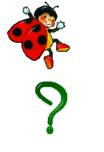
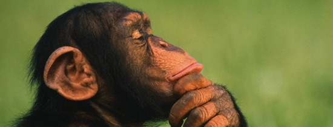

- Ghepardul este asa de rapid incat are nevoie de doar 3 secunde pentru a atinge viteza de la 0 la 100 km/h?
- Desi se numesc Porcusori de Guineea, aceste animalute nu sunt nici porci si nici nu provin din Guineea, ci sunt mai degraba niste rozatoare ce provin din Muntii Anzi?
- Un gandac de bucatarie poate trai cateva saptamani fara cap. Acesta va muri totusi, intr-un final, de foame?
- Colibri este singura pasare care poate zbura cu spatele. Acasta poate plonja prin aer cu viteza de 92,8 kilometri pe ora, fiind cea mai rapida creatura de pe Pamant?
- In Amazon exista o specie de maimute care au dimensiunea unei jumatati de palma a unui barbat adult. Din pacate,aceste animale sunt pe cale de disparitie. Acestea se numesc Pygmy Marmoset?
- Un melc are in jur de 25.000 de dinti. Acestia sunt repartizati pe 150-200 de randuri?
- Rechinii trebuie sa inoate in permanenta pentru a nu se ineca? 
- Testoasa Jonathnan este cel mai batran animal terestru in viata, aceasta avand varsta de 183 de ani. Jonanthan traieste pe insula Sf. Elena inca din 1882. Cercetatorii afirma ca s-ar fi nascut in anul 1832. O testoasa uriasa poate trai aproximativ 250 de ani?
- Vulturii Egipteni folosesc pietre pentru a sparge ouale de strut?
- Excrementele casalotului (ambra cenusie) sunt cele mai scumpe ingrediente folosite in parfumerie?
- Ursii polari au pielea neagra. De asemenea, acestia sunt stangaci?
- O vipera produce intr-un an circa 1-1,5 grame de venin, iar pretul unui gram de venin poate ajunge la 2000 de dolari?
- Elefantul african este cel mai mare mamifer in viata de pe pamant. Trompa musculoasa serveste ca nas, mana, picior suplimentar, dispozitiv de semnalizare si unealta pentru adunarea mancarii. Cu 40 000 de muschi, trompa face miscari ca si cum ar culege oua?
- Lamantinul, cunoscut si sub numele de vaca de mare, este un mamifer acvatic cu dimensiuni impresionante si o greutate de peste o tona. Este una din speciile lumii aflate in pericol de disparitie in viitorul apropiat si este vanat in exces din cauza uleiului si a carnii sale. Poate trai pana la 70 de ani si atinge maturitatea sexuala abia la varsta de 13 ani? 
- Lorisul zvelt este un primat nocturn, de dimensiuni mici, si se afla pe cap de lista printre speciile lumii aflate in pericol de disparitie. Pentru o perioada de 60 de ani, oamenii de stiinta au crezut ca acest mamifer a fost supus in totalitate fenomenului de extinctie?
- Ursul koala este cel mai somnoros animale, acesta pentru a se simti odihnit trebuie sa doarma 22 de ore pe zi?
- Una dintre diferentele intre celelalte specii de ursi si cei panda este faptul ca panda nu hiberneaza niciodata?
- Casalotul poate trai mai bine de 200 de ani?
- Exista 23 de specii de vulturi in intreaga lume, fiecare continent avand cel putin o specie, cu exceptia Australiei si Antarcticii?
- Culoarea, modelul blanii si lungimea firelor de par difera la leoparzi in functie de regiunea in care traiesc?